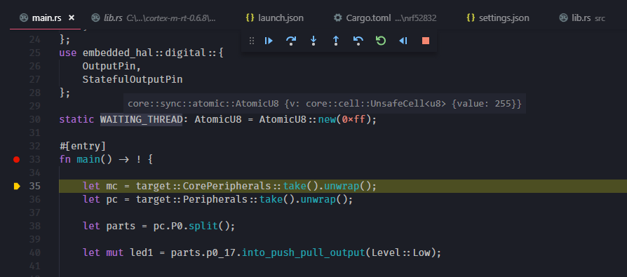

Overview of embedded programming and debugging
This section intends to provide an overview of how to go about programming and debugging microcontrollers on embedded hardware. Later sections of this book will dive into numerous topics from simply flashing a binary onto a chip to single stepping through instructions, inspecting memory and registers, instructing the CPU to halt execution under certain conditions and wait for input, look for changes in specific memory locations, etc.
Why programmers and debuggers
What are debuggers and programmers?
Generally, an additional hardware device is required to allow the host PC you are developing on to connect to the target microcontroller. These devices have several names such as debugger, debug probe or programmer. Sometimes they are referred to by a specific brand or protocol they speak, e.g. ST-Link, JLink. These devices are typically distinct pieces of hardware, but in case you are using development boards, they are often integrated into the board.
To add to the confusion, the software used to control the hardware
device, in our case gdb is also typically referred to as 'debugger'.
In contrast to creating software for a PC, the compiled program will be running on a different device and needs to be transferred to the target which needs to be instructed to execute the program. This is accomplished by the debugger device. The debugger is therefor our main tool to understand and debug the inner workings of the system being developed. These tools are very powerful and give the user complete access and jurisdiction over a microcontroller, even to the point that the user can rewrite arbitrary memory manually if desired.
SHOULD WE ADD IMAGES OF COMMON HARDWARE TOGETHER WITH SOME DESCRIPTION?
GDB
Our main option for debugging embedded targets is a version of
gdb specifically targetted to the processor architecture being used, for
example, arm-none-eabi-gdb for bare metal arm targets. Unlike
debugging on a local machine, the gdb instance and application code
typically run on different devices. gdb supports this through the use
of servers and remote targets, whereby the debugger device
implements the gdb server, and the gdb instance can connect to this to
interact with the running application.
While the invocation of GDB is typically independent of the debugger and thus gdb server you are using, you may need to change the remote server address when connecting and provide specific options (such as semihosting) which are not universally available on all debugger devices.
Connecting
- Run
gdb ELFwhere ELF is your output file to start gdb (ie.gdb target/thumbv7em-none-eabihf/release/hello_world) - Enter
target extended-remote :PORTto connect to the gdb server (ie.target extended-remote :4242), note that this may be a TCP or serial port depending on the programmer - Get debugging!
gdb will automatically execute commands from a .gdbinit file in the
directory from which it is executed, allowing you to automate the
connection to the gdb server and setting any breakpoints you might need.
A useful minimal example is:
# Connect to the remote target
target extended-remote :4242
# Load the application
load
# Set a breakpoint on our entry to main
break main
# Start execution
continue
Useful Commands
In general gdb will interpret the shortest series of characters required
to uniquely identify a command as that command, for example tar
instead of target.
target extended-remote ADDRconnects to a remote target.break LOCATIONorb LOCATIONsets a breakpoint, for exampleb mainsets a breakpoint on the entry to main.print VARIABLEorp VARIABLEprints the value of a variable at the point you are inspecting,p\x VARIABLEprints it in hex.delete Nord Ndeletes a breakpoint by index.continueorccontinues to the next breakpoint.steporssteps through execution line by line.backtraceorbtprints a backtrace from the point you are currently inspecting.loadflashes the current binary to the device.runre-starts an application.layout LAYOUTswitches to different views, useful options areSRCfor source,REGSfor registers,ASMfor assembly.quitorqgets you out, though you may have to interrupt withctrl+cif the application is currently running.source FILENAMEruns the commands specified inFILENAME.set substitute-path SRC DSTsubstitutes paths that start withSRCwithDST. This is useful for stepping into the rust sources as explained later.
You can invoke gdb with the source layout loaded by passing the --tui
argument in the command line. Note that tui mode starts with the
source view selected so normal control keys will scroll the source view
instead of the terminal, you can move through previous and next commands
with ctrl+P and ctrl+N respectively, or use ctrl+x o to move focus
between the source and terminal views and use your arrow keys and
page-up/page-down as normal.
You may encounter errors stepping through code concerning sources that
cannot be found. In case the source paths contains hashes like:
/rustc/e305df1846a6d985315917ae0c81b74af8b4e641/... the cause may be
rust sources which were compiled on a build server in the directory
/rustc/{commit_hash}. To find this commit hash you can use the command
rustc -Vv. The set substitute-path command can then be used to
substitute this with your {RUST_SRC_PATH}/lib/rustlib/src/rust
(RUST_SRC_PATH can be found from the output of rustc --print=sysroot). For example:
set substitute-path /rustc/e305df1846a6d985315917ae0c81b74af8b4e641 "C:/Users/username/.rustup/toolchains/nightly-x86_64-pc-windows-msvc/lib/rustlib/src/rust"
VSCode Integration
The Native Debug extension can be used to debug Rust code directly in
the editor. To use it you will need to add a launch configuration to
your .vscode/launch.json file. Below is an example that starts gdb and
executes the commands specified in debug.gdb:
"configurations": [
{
"name": "Remote debug",
"type": "gdb",
"request": "launch",
"cwd": "${workspaceRoot}",
"target": "${workspaceRoot}/target/thumbv7em-none-eabihf/debug/hello",
"gdbpath" : "arm-none-eabi-gdb",
"autorun": [
"source -v debug.gdb",
]
}
]
Make sure to change the "target" to match the destination of your
output file.
Before launching the debugger in VSCode you must ensure that
JLinkGDBServer, OpenOCD or other debugger of choice is running on the
correct port. Once running you can then set breakpoints in the code
margin and hover over local or global variables to see their current
value

Cargo run integration
The cargo run command can be configured to start the debugger. To use
this, simply add the following to the appropriate target in your
.cargo/config:
runner = "arm-none-eabi-gdb -q -x debug.gdb"
Interfaces / Protocols
Two common protocols exist to communicate and introspect microcontrollers: JTAG (Joint Test Action Group) and SWD (Serial Wire Debug).
JTAG
JTAG has a long history, and was originally intended to daisy-chain multiple micro processors, FPGAs, memory chips, simply anything which supports JTAG, and access them over the same JTAG bus. To enable this, it requires more signals than SWD:
- TDI (Test Data In)
- TDO (Test Data Out)
- TCK (Test Clock)
- TMS (Test Mode Select)
- TRST (Test Reset) which is optional
(a variant of JTAG called cJTAG, c for compact exists that uses 2 signals)
The following image illustrates a common communication example with a JTAG bus with multiple devices:

SWD
SWD is quite similar to JTAG, as it uses the same protocol but it is limited to two electrical signals and cannot address multiple targets on a single connection. SWD is also a proprietary ARM technology. While JTAG is vastly more versatile, SWD's strength is in its simplicity as many systems only have one microcontroller to program. In these cases the reduction of signals while still having full debugability is a major win. In SWD the following signals are available:
- SWDIO (Serial Wire Debug Input / Output)
- SWCLK (Serial Wire Clock)
The following image illustrates a common communication example with SWD communicating with a single microcontroller:

Which one to use?
When designing a system, we should select the interface which is most convenient for the system, and there are simple criteria to consider:
- Does the target support SWD?
- Does the system have more than a single component which needs to be programmed or debugged?
- How valuable is board space and is the larger area required for JTAG acceptable?
- What does the component manufacturer recommend?
Debugging Applications
Program Files
Depending on the debugger you use, you may need to convert your compiled output to a different format. By default the compiler outputs a rich ELF file containing section information (and debug symbols if you have them turned on). This information is useful to debug software, i.e. gbd, but most microcontrollers require a very minimal binary (BIN) or hexadecimal (HEX) file, consisting of only the program instructions.
cargo-binutils
provides an objcopy command to convert between formats. Since
objcopy can only operate on a single file, as with all cargo
commands, the concrete target needs to be specified. For embedded
projects the target can either be:
-
an application binary: specify this using
--bin NAMEwhereNAMEis either the name of the crate (in this case the implicit target with code insrc/main.rs) or the name of the binary as defined inCargo.toml -
an example: use
--example NAMEwhereNAMEis the name of the example source code in theexamplesfolder
To create a bin file execute:
$ cargo objcopy TARGET --release -- -O binary OUTPUT
or for a hex file:
cargo objcopy TARGET --release -- -O ihex OUTPUT
where TARGET is the target specification as explained above
and OUTPUT the desired output filename.
This is equivalent to using arm-none-eabi-objcopy for the same
purpose, but cargo objcopy is aware of the context can determine the
target output directory.
TODO: do we always have to build with release to get reasonable binary sizes? TODO: could cargo objcopy just do these things by default?
Common debugger platforms
OpenOCD
OpenOCD (Open On-Chip Debugger) is a very popular piece of software which provides an interface for a debugger software, such as GDB, to connect to in order to provide in-system programming and boundary-scan testing for embedded devices.
However, OpenOCD only provides the gbdserver for the debug software to connect to and requires a debug adapter to connect to the target microcontroller.
OpenOCD supports both JTAG and SWD signaling schemes throughsupported debug adapters. These are typically connected to the PC via USB. These devices range from very cheap eBay reseller devices, are built into evaluation boards from microcontroller manufacturers, to very expensive, special purpose, adapters.
TODO: list workable openocd hardware
Segger JLink
Segger provide a JLink family of programmers and debuggers commonly used in industry. JLink devices require closed source binaries to use, however these are available for common platforms here. JLink probes are typically compatible with both SWD and JTAG based debugging.
Flashing is managed using JLinkExe and a custom gdb server is provided
in JLinkGdbServer, the JLinkExe commands are documented
here, note
that on windows this is called JLink.exe.
Programming
- Run the
JLinkExe --speed 4000 --if SWDcommand to connect to the debugger in SWD mode - Select your device with
device DEVICEeg.device EFM32G210 - Halt the processor with
haltorh - Load your binary with
loadbin BINARY, FLASH_ADDRESSeg.loadbin test.bin 0x0000 - Verify your binary flashed correctly with
verifybin BINARY, FLASH_ADDRESSeg.loadbin test.bin 0x0000 - Reset the processor with
resetorr - Quit the JLinkExe gui with
q
It is also possible to pass scripts to JLinkExe with the
--CommanderScript option, allowing automation of commands.
Debugging
To debug with the JLink device you run the JLinkGDBServer command with
the specified device, speed, and interface. For example, JLinkGDBServer -device DEVICE -speed 4000 -if SWD. You can then launch a GDB instance
with the appropriate command for your target (eg. arm-none-eabi-gdb BINARY.elf) and connect to the GDB server using target remote localhost:2331 (specifying the default JLinkGDBServer port).
A common gotcha with JLinkGDBServer is interrupts not firing. If you
experience this issue then add monitor reset to the end of your GDB
initialization commands. You can also enable semihosting and print to
stdout with monitor semihosting enable and monitor semihosting IOClient 2 respectively.
ARM DAPLink
DAPLink is a project by ARM to develop an open source cortex debug probe, this provides a set of interfaces to simplify programming and debugging and can be implemented on nearly any USB-capable hardware. DAPLink provides a set of endpoints including a CMSIS-DAP interface for debugging, a USB disk for drag-and-drop programming, and an optional serial port for communication with the target system. The USB mass storage approach, in which the target device appears as a thumbdrive in the host operating system is useful for programming of devices in-field as it requires no additonal software, however is not always reliable for development use.
Programming
After connecting a DAPLink device to your system, a USB drive should
appear. To flash, copy your binary file (*.bin) to the drive and
wait for completion.
Debugging
TODO: try it out
STLink
STLink debuggers are integrated on most ST development boards, and are thus one of the most common programmers you will come across.
ST provides vendor utilities for programming on Windows, and these devices are typically compatible with OpenOCD. You can also use the texane/stlink package which provides a set of utilities to interact with STLink debuggers.
Note that while a STLink programmer might technically work for programming / debugging any SWD compatible device, you are legally prohibited from using it with devices not manufactured by ST.
Programming
Flash with st-flash --reset flash BINARY FLASH_ADDRESS where BINARY is
your bin file, and FLASH_ADDRESS is the flash address to write the file.
You can also erase the memory wth st-flash erase which due to a bug
may sometimes be required prior to flashing.
Debugging
Launch a gdb server on the default port (:4242) with st-util , check the help with st-util --help for other options.
Black Magic Probe
The BMP (Black Magic Probe) is different from the other devices listed here in that it does not require OpenOCD or other intermediary host software to provide a gbd-server. Instead the device itself implements a GDB server over serial port connection. In a sense, it is OpenOCD combined with a debug adapter in the same dongle. The BMP is open hardware and runs open source software inside it as well, plus using GDB with the BMP very similar to OpenOCD. BMP is based on a common STM chip and the firmware can easily be ported to other boards.
Debugger used in this book
This book uses the STM32F3Discovery platform for all examples, just like the Discovery Book and The Embedded Rust Book. This eval board integrates a STLink v2 debug adapter with which we will communicate using OpenOCD.
Debugging Tools
There are currently two main debugging softwares on the PC side, the Gnu Debugger (GDB) and LLVM's Debugger (LLDB). At the time of writing this book, LLDB does not yet have the required support to debug the targets we are using, and we will be using GDB in this book.